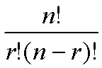

This GO Term Finder tool searches for significant shared GO terms, or parents of the GO terms, used to describe the genes in your list to help you discover what the genes may have in common.
The Gene Ontology (GO) project was established to provide a common language to describe aspects of a gene product's biology. A gene product's biology is represented by three independent structured, controlled vocabularies: molecular function, biological process and cellular component. For more information on GO, see the GO consortium home page .
To provide the most detailed information available, gene products are annotated to the most granular GO term(s) possible. For example, if a gene product is localized to the perinuclear space, it will be annotated to that specific term only and not the parent term nucleus. In this example the term perinuclear space is a child of nucleus . However, for many purposes, such as analyzing the results of microarray expression data, it is very useful to "calculate" on GO, moving up the GO tree from the specific terms used to annotate the genes in a list to find GO parent terms that the genes may have in common. The GO Term Finder tool allows you to do this.
- To download a sample text file of genes identified by MGI accession ID, click here . This file can be submitted to MGI GO_Slim Chart tool.
- To view a sample results page with explanation of results, click here .
- To view sample results as an Excel spreadsheet, with chart created in Excel, click here .
Genes are directly associated with GO terms that are as granular as possible. Because the GO terms have structural relationships with each other, genes are also considered to be indirectly associated with all the parents of the granular terms to which they are directly associated.The tool looks for significant shared GO terms that are directly or indirectly associated with the genes in the list. To determine significance, the algorithm examines the group of genes to find GO terms to which a high proportion of the genes are associated compared to the number of times that term is associated with other genes in the genome. For example, when searching the process ontology, if all of the genes in the group were associated with "DNA repair", this term would be significant. However, since all genes in the genome (with GO annotations) are indirectly associated with the top level term "biological_process", it would not be significant if all the genes in the group were associated with this very high level term.
The GoTermFinder attempts to determine whether an observed level of annotation for a group of genes is significant within the context of annotation for all genes within the genome. Suppose that we have a total population of N genes, in which M have a particular annotation. If we observe x genes with that annotation, in a sample of n genes, then we can calculate the probability of that observation, using the hypergeometric distribution (eg, see http://mathworld.wolfram.com/HypergeometricDistribution.html ) as:
where generically, :
which is the number of permutations by which r entities can be selected from n entities, is calculated as:

To actually generate a p-value, rather than a simple probability, instead of asking the question, what is the probability of having 5 out of 10 genes with this annotation, given that 42 out 30,000 have it, we ask the question what is the probability of having 5 or more out of 10 genes having this annotation.
This is what a p-value is – the chance of seeing your observation, or better, given the background distribution. We calculate this by summing our probabilities for 5 out of 10, 6 out of 10, 7 out of 10 etc. Thus the probability of seeing x or more genes with an annotation, out n, given that M in the population of N have that annotation, is:
Note that this is the same as saying what’s the chance of getting at least x successes, and can also be represented by:
Typically, a cut-off for p-values, known as the alpha level, is chosen, such that p-values below the alpha level are deemed significant. The alpha level is the chance taken by researchers to make a type one error. The type one error is the error of incorrectly declaring a difference, effect or relationship to be true due to chance producing a particular state of events. Customarily the alpha level is set at 0.05, or, in no more than one in twenty statistical tests the test will show 'something' while in fact there is nothing. In the case of more than one statistical test the chance of finding at least one test statistically significant due to chance fluctuation, and to incorrectly declare a difference or relationship to be true, increases. In five tests the chance of finding at least one difference or relationship significant due to chance fluctuation equals 0.22, or one in five. In ten tests this chance increases to 0.40, which is about one in two. Thus we need to make an adjustment that will correct for multiple hypotheses.
The Bonferroni method adjusts the alpha level of each individual test downwards to ensure that the overall risk for a number of tests remains 0.05. Even if more than one test is done the risk of finding a difference or effect incorrectly significant continues to be 0.05. To do this, it simply divides the alpha-level by the number hypotheses that were tested, so if 20 hypotheses were tested, then instead of using an alpha-level of 0.05, an alpha level of 0.0025 would be used. Alternatively, the p-values can be adjusted, by multiplying by the number of hypotheses that were tested, and the alpha-level can be kept the same. This approach is the one that MGI’s GOTermFinder takes. The Bonferroni correction assumes however that all hypotheses are independent. In the case of the GOTermFinder, each hypothesis is a node in the Gene Ontology, which has two or more annotations (either directly or indirectly) from the tested group of genes. Because these hypotheses form a Directed Acyclic Graph (which is a subgraph of the full GO DAG) there are thus relationships between the hypotheses. Thus instead of multiplying the generated p-values by the number of tested hypotheses, they are multiplied by the number of hypotheses that exist in the following set: the set of hypotheses from which all other hypotheses can be inferred.
Eg Imagine Nodes B and C have two annotations each, and that Node A is a parent of both, and has no direct annotations. Simply by knowing about the number of annotations to B and C, and that A is their parent, we can infer the number of annotations on A, which is 4 indirect annotations. Thus our correction factor would be 2, not 3, as we only need to know about annotations to B and C to predict all our hypotheses that we will test.
{kind=link}